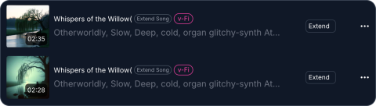

不会乐器的我，靠AI音乐在毕设答辩前交了差
毕设答辩前一周导师突然要求加原创配乐，不会乐器也没编曲经验的我差点放弃，朋友推荐的Make Best Music让我从生成旋律到延伸长曲、再到母带处理，一周内搞定了30分钟的完整配乐。
周一凌晨三点，我在翻免版权音乐库
说出来丢死人。毕设做了三个月——一个校园社区小程序，代码写了、UI画了、功能全跑通了，就差个展示demo。周日晚上导师在群里@我："演示视频得加原创配乐，别用网上搜的，答辩时被问穿了不好看。"
我盯着这条消息愣了五分钟。我连吉他弹不响一根弦，钢琴键认不全七个音，原创配乐？免谈。
死马当活马医，我去翻那些免版权音乐站。翻了三个小时，要么是我三年前就听过的老调调，要么是风格跟demo完全搭不上的电子噪点。凌晨三点钟的宿舍特别安静，我听到了自己叹气的声音。
室友的屏幕亮了
上铺的阿哲在敲键盘，屏幕上飘着一堆我看不懂的波形。他听到我翻网页的声音没动静了，探头往下看："还在找bgm啊？"
"不然呢，我还能自己写一首吗。"
他笑了一声，把笔记本转过来让我看。屏幕上是Make Best Music官网的界面，他刚输完一段提示词，点了一下，几秒后一段干净的钢琴旋律从音箱里飘出来——很淡，很柔，刚好是我想要的那种lo-fi专注感。
"这玩意儿？AI写的？"我坐直了。
"嗯，你去它的官网看看，免费档每天能跑好几次。我最近帮社团剪视频都用这个。"

从一段旋律到一首"歌"
我当天就从官方下载拿到了客户端，注册了账号。Free档每天Credits有限，但够我试错个三五次。一开始我写的风格提示词特别干："lo-fi piano music"，出来的东西还行，但不够贴。阿哲跟我说，提示词越具体越好，要加情绪、加场景、加细节。
我改了好几版，最后写的是："深夜图书馆窗外下雨，台灯暖黄色，咖啡凉了，坐在电脑前敲代码的专注感，lo-fi钢琴，节奏缓慢，情绪平静略带一点乡愁"——好家伙，出来的东西我自己都愣了，那钢琴声一出来我鸡皮疙瘩都起来了。
问题是单次生成最长只有八分钟，而我的demo视频加起来需要三十分钟的持续背景乐。正准备考虑重复拼接凑合一下，阿哲又指给我看界面上的 Extend 按钮。
把八分钟变成三十分钟的魔法
Extend 的逻辑很简单：AI先分析你原曲的风格、BPM、调性、乐器编排，然后自动生成一段无缝衔接的新片段。我第一次点Extend的时候，以为就是在原曲末尾硬接一段，结果AI给我出了两个候选版本，选了其中一个之后它又自动把原曲和延伸段做了交叉淡入淡出，几乎听不到断点。
最爽的是这个功能可以循环用。原曲八分钟 → Extend到十分钟 → 把合并后的十分钟再Extend → 十二分钟 → 再来一次 → 十四分钟……我就这样来回点了四五次，半个小时就凑齐了。每次Extend，AI都会重新分析当前整首歌的风格，保证新延伸的段落和前面的不脱节。

到这里我已经有点上头了。但真正让我觉得"这玩意儿能当工具用"的，是后面两个功能。
MIDI救了我的强迫症
钢琴音色本身我挺喜欢的，但总觉得单钢琴有点单薄。想加个合成器底垫？换个更暖的电钢琴？我又不会用FL Studio或Logic Pro，那些专业DAW对我来说就是外星软件。
直到我翻了Make Best Music文档才发现它有个 AI MIDI Generator——它能直接生成可编辑的MIDI文件，还带一个内置的钢琴卷帘编辑器。我做了两件事：先从那段八分钟的钢琴旋律里提取了MIDI，然后把文件导入Audacity（这个我勉强会用一点），换成了我喜欢的一款免费合成器音色，加了点Reverb，瞬间整个氛围就不一样了。
后来我又用MIDI Generator从零生成了几段不同风格的和弦进行——Jazz的、Ambient的、甚至一段带着点东方韵味的——选了最搭的那段叠在原曲下面。这段操作让我第一次觉得，AI不是在"替"我做音乐，它是在帮我打开了一扇以前根本碰不到的门。
最后一公里：AI母带处理
到了周二晚上，三十分钟的配乐基本成型了。但听下来总觉得响度不够，跟网上那些成片比起来声音小了一截，手机上戴耳机听还好，外放就有点飘。
Make Best Music 内置的 AI Mastering 就是干这个的。我把最终版WAV导进母带处理工具，点了一下按钮，AI自动做了一整套处理链：响度归一化到流媒体平台标准的-14 LUFS、频段EQ修正、动态压缩、限制器防削波、立体声增强，甚至还自动去了齿音。处理完之后可以一键A/B对比原版和母带版——差得不是一点半点，母带版明显更饱满、更有"压箱底"的质感。
这一步消耗了两个Credits，比重新生成一首歌便宜多了。
答辩当天
周五下午答辩，我放了demo视频，配乐一起走。评委老师没人问"这音乐哪儿找的"——或者说，音乐的质感好到让人默认它是个正经的原创东西。我没好意思说这全是AI干的，就含糊说了句"自己做的"。
后来跟阿哲复盘，他说Free档的Credits其实不够用，他是Basic档，每天十五次歌词生成加Credits更充裕。而且歌词生成还有专门针对亚洲语言优化的 Kimi K2.6 模型——我之前瞎试中文歌词的时候就觉得AI写的东西有点像翻译腔，原来换这个模型效果会好很多。
说实话，我还是不会弹吉他，钢琴键依然认不全。但这次经历让我意识到一件事：以前我觉得"做音乐"是一件需要天赋和多年训练的事，现在它变成了一件"描述清楚你想要什么，然后调一调参数"的事。Make Best Music 当然不是万能的——AI延伸多了结构会松散，母带有时会过度压缩，MIDI提取也有精度问题——但对一个毕设答辩刚需的普通人来说，它足够了。
这套AI音乐创作的完整工作流和进阶参数说明，我同步整理到了GitHub、Gitee和GitCode三个仓库里，适合像我一样零基础想试试AI音乐创作的人。